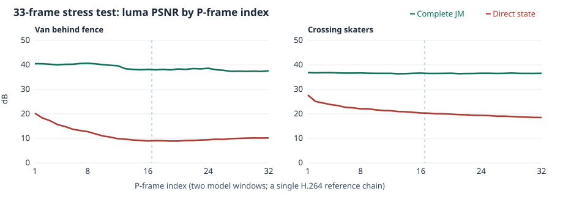

最初目标与已完成的位置
冻结 DiT
缓存 step 5 / 10 / 15 / 20 的 clean latent 与 hidden，并保存各步 VAE 解码的 YUV。
JM Oracle 状态
固定 QP 28、Baseline / CAVLC、单参考、Skip / P16×16。导出模式、qpel MV 和闭环像素残差。
latent → 最终模式
Conv3D + 步骤条件，共 15,042 参数。训练读取缓存 clean latent，目标是最终 P 帧宏块模式。
状态 → H.264
给定最终 Oracle I 帧，32 条由模型预测全部 P 帧状态的码流通过 JM 与 FFmpeg 双解码。
初稿中的 A2 可用中间特征读取当前状态 ys。为研究提前退出，本轮训练 A2-final，把四个输入步骤统一指向同一样本的最终状态 yfinal。各步骤自己的 Oracle 标签仍在数据集中，可用于当前状态读取和状态稳定性分析。
实验怎么推进到现在
4 条视频验证采集和交接
2 个 prompt × 2 个 seed，得到 16 条步骤记录。每步保存 latent、hidden、当前 YUV，另存完整采样的 final_latent.pt 与 final_raw.yuv。本轮对扩容批次的 8 条独立测试视频验证：step 20 clean latent 与 solver 最终 latent 的张量值相同。
Linux JM 后端与 Oracle 闭合
移植运行包并编译 Linux JM。先做 1 条测试，再构建 16 条记录。4 个样本的理想标签经适配器回放，码流逐字节一致，JM / FFmpeg 解码像素一致。
扩容 32 条，构建 128 条 Oracle 记录
8 个 prompt × 4 个 seed。所有记录均通过状态回放、双解码和特征检查，回放运动搜索耗时为零。每个视频的四步共用同一份最终监督，共 32 份最终目标。
真实训练 A0.1 与 A2-final 模式头
先用旧 4 条跑通真实标签训练，再用新增 32 条训练与评测。课程逐步加入 step 20 → 15 → 10 → 5。按 prompt 划分 20 / 4 / 8 条训练、验证和测试视频。验证集选权重，独立测试复核混淆矩阵。
用更早的 latent，能读出多少最终模式？
扩容批次的固定测试集含 2 个 prompt、8 条视频。所有步骤评估同一份最终宏块模式。
蓝色为 A0 最终步头，绿色为 A2 共享头，金色为固定全 Skip 基线。Macro-F1 对两个类别的 F1 等权平均。
展开精确数值与实验口径
| 模型 / 输入 | Macro-F1 | Accuracy | Skip 召回 | P16 召回 |
|---|---|---|---|---|
| A0 · Step 20 | 0.7586 | 0.8094 | 0.8634 | 0.6601 |
| A2 · Step 5 | 0.7310 | 0.7896 | 0.8553 | 0.6080 |
| A2 · Step 10 | 0.7684 | 0.8195 | 0.8778 | 0.6584 |
| A2 · Step 15 | 0.7730 | 0.8230 | 0.8799 | 0.6657 |
| A2 · Step 20 | 0.7737 | 0.8225 | 0.8761 | 0.6742 |
| 固定全 Skip | 0.4235 | 0.7345 | 1.0000 | 0.0000 |
A0 训练 15 个 epoch，A2 四阶段累计 60 个 epoch，训练预算不同。旧 4 条 pilot 与扩容批次使用不同测试 prompt。
真实预测接入 JM 后的结果
固定 8 条测试视频。模式、MV 和残差均由模型预测，I 帧使用 Oracle。32 条预测码流全部通过双解码。
| 路径 | 码率 kb/s | P 帧 Y PSNR dB | P 帧 YUV PSNR dB | 到码流 s | 到解码 s |
|---|---|---|---|---|---|
| VAE + 常规 JM | 1205.4 | 41.17 | 42.17 | 44.24 | 44.37 |
| 预测 · step 5 | 194.2 | 21.03 | 22.60 | 1.69 | 1.82 |
| 预测 · step 10 | 194.3 | 20.97 | 22.53 | 1.67 | 1.80 |
| 预测 · step 15 | 194.3 | 20.91 | 22.48 | 1.68 | 1.80 |
| 预测 · step 20 | 197.2 | 20.93 | 22.49 | 1.66 | 1.79 |
码率包含 I 帧，PSNR 只计 P 帧。耗时从已有 latent 算起，DiT 采样及 Oracle I 帧准备需另外计时。
step 20 的画质差距约 20.24 dB。恢复 Oracle 模式和 MV 后，预测残差的亮度 PSNR 为 26.75 dB。
最终 latent 的闭环编码对照
保留上轮模式和 MV，只重算闭环残差，亮度 PSNR 从 20.93 升到 26.28 dB。通过真实 VAE 像素和 JM 局部运动搜索，闭环画质达到约 40.76 dB。
| 路径 | P 帧亮度 PSNR (dB) | 码率 (kb/s) | latent 到码流 (s) |
|---|---|---|---|
| 完整 JM 参考 | 41.17 | 1205.4 | 44.24 |
| 上轮纯预测 | 20.93 | 197.2 | 1.66 |
| 原生半径 4 | 40.41 | 1358.5 | 2.46 |
| 相关性头作中心，半径 4 | 40.36 | 1368.5 | 2.49 |
| 原生半径 8 | 40.76 | 1287.9 | 2.69 |
| 旧头作中心，半径 8 | 40.74 | 1292.9 | 2.70 |
| 相关性头作中心，半径 8 | 40.73 | 1291.7 | 2.71 |
| 相关性头补一个候选，半径 8 | 40.77 | 1287.7 | 2.68 |
8 条测试视频，72 条码流通过双解码。8 像素局部搜索较完整参考低 0.41 dB，码率高约 6.9%。学习 MV 在相同窗口预算下未显示稳定增益。
最终 latent：学到的源图像接入闭环
混合路径达到本轮质量线：40.77 dB，距完整 JM 0.40 dB。 秩 40 输出头保留冻结的 Wan 解码主干，JM 继续用 8 像素窗口选模式和 MV，并在实际重建参考上计算残差。旧预测模式和 MV 仍限制画质。
| 路径 | P 帧亮度 PSNR (dB) | 码率 (kb/s) | latent 到码流 (s) |
|---|---|---|---|
| 完整 JM 参考 | 41.17 | 1205.36 | 44.24 |
| 直接头，仅生成视频 | 27.18 | 2770.00 | 1.58 |
| 直接头，加入 60 条 DAVIS | 27.70 | 1848.79 | 1.58 |
| 冻结解码前缀 + 学习尾部 | 34.66 | 1506.59 | 1.95 |
| 秩 40 投影 + JM 8 px | 40.77 | 1287.80 | 2.66 |
| 秩 40 投影 + 旧模式/MV（Oracle I） | 26.28 | 1928.68 | 2.04 |
8 条独立生成域视频，只用最终 latent。码率较完整 JM 高 6.84%。88 条测试码流通过双解码。8 像素窗口加入学习 MV 候选后，画质变化不足 0.001 dB。24 条训练和验证轨迹用于参考对齐核验；DAVIS 公共数据未进入生成域测试。
Skip 检查与运动候选减少 JM 搜索
固定旧残差，检验新 Skip 与 MV
- 读取历史 step 20 的
prediction.npz，用同一个 B1 模板恢复 Oracle I 帧，复现原码流。 - 将 Skip 概率 ≥0.90 的块设为 Skip，P16 MV 取模型排序第一的整数候选并转成 qpel。分开替换模式、MV 以及两者。回放不做 JM 运动搜索。
- 逐样本比对原基线码流、I 帧像素和旧残差哈希，再用 JM 与 FFmpeg 双解码，针对
final_raw.yuv打分。
| 回放方案 | P 帧 Y PSNR (dB) | P 帧 YUV PSNR (dB) | 整段码率 (kb/s) | 缓存状态到码流 (s) |
|---|---|---|---|---|
| 原 step 20（逐字节复现） | 20.93 | 22.49 | 197.22 | 1.66 |
| 仅换模式 | 20.86 | 22.42 | 218.04 | 1.73 |
| 仅换 MV | 24.53 | 26.12 | 244.51 | 1.58 |
| 同时替换模式与 MV | 25.16 | 26.74 | 280.06 | 1.62 |
原基线 8 条码流均逐字节复现。固定旧残差时，新模式与 MV 合用提升 4.23 dB。主要增益来自 MV，码率同时增加。表中结果不是等码率比较。
对比视频左上为原片，其他画面为实际解码结果。视频以三倍慢速展示。
旗帜 · seed 101
舞者 · seed 101
全部 8 条：0024 · 0025 · 0026 · 0027 · 0028 · 0029 · 0030 · 0031
按选中 MV 与当前重建参考校正残差
- 修复旧 JM 回放的两个 MV 缓冲区不同步。在 P16 同步写码流和运动补偿使用的 MV，Skip 走原生派生；每条码流核对编码器与两个解码器的重建。保持新模式、选中 MV 和 Oracle I 帧。在 20 条训练及 4 条验证视频上，用旧残差和代理残差各跑一遍，采集两种重建轨迹的实际运动补偿像素（MC）。
- 用
原视频 − 当前 MC构造 P16 残差标签。以秩 40 代理 − 当前 MC为对照，训练 15 参数的 Y/U/V 校正头，验证集选择正则系数。 - 用新残差驱动实时回放。重建后的参考继续参与下一帧的 MC，保留模式与 MV。比较纯代理差分与学习校正的实际码流。
| 回放方案 | P 帧 Y PSNR (dB) | P 帧 YUV PSNR (dB) | 整段码率 (kb/s) | 缓存状态到码流 (s) |
|---|---|---|---|---|
| 固定新模式/MV + 旧残差 | 25.16 | 26.74 | 280.06 | 1.62 |
| 固定新模式/MV + 代理减实际 MC | 39.57 | 40.69 | 1397.39 | 1.76 |
| 固定新模式/MV + 学习校正 | 39.57 | 40.69 | 1397.39 | 1.75 |
学习校正相对于代理直接减实际 MC 的平均亮度变化为 +0.000 dB。验证集亮度残差 RMSE 从 0.4533 降到 0.4453 像素，但 8 条测试码流与未训练的代理差分逐字节相同。
旧后端的代理残差回放为 22.26 dB。虽然两个解码器一致，旧编码器的内部参考与解码结果存在漂移；该结果作为后端问题复现保留。
两个诊断对照
真值源像素对照保持固定模式/MV，衡量源代理带来的差距。全 P16 对照保留候选 MV，测试模型 Skip 决策的影响。这两组只用于诊断。真值源像素只增加约 0.007 dB。全 P16 增加约 0.74 dB，码率也会上升。主测试的 48 条码流和 16 条诊断码流均通过编码器、JM 解码器、FFmpeg 三方重建一致性检查。
| 回放方案 | P 帧 Y PSNR (dB) | P 帧 YUV PSNR (dB) | 整段码率 (kb/s) | 缓存状态到码流 (s) |
|---|---|---|---|---|
| 固定新模式/MV + 真值源减实际 MC | 39.58 | 40.69 | 1397.75 | 1.76 |
| 全 P16 + 同一候选 MV + 代理减实际 MC | 40.31 | 41.40 | 1499.23 | 1.87 |
验证集残差误差与采样数
| 平面 | 训练像素 | 验证像素 | 代理差分 RMSE | 学习校正 RMSE |
|---|---|---|---|---|
| Y | 2,000,000 | 400,000 | 0.4533 | 0.4453 |
| U | 2,000,000 | 400,000 | 0.3832 | 0.3781 |
| V | 2,000,000 | 400,000 | 0.4017 | 0.4015 |
8 条测试数据和逐视频 P 帧亮度 PSNR
17 帧、832×480、16 fps、QP 28、单参考。测试原视频仅用于评分；训练与验证的 prompt 均与测试隔离。
| 样本 | seed | prompt | 旧回放 | 新模式与 MV | 代理差分 | 学习校正 |
|---|---|---|---|---|---|---|
| sample_0024 | 101 | A fixed camera shows a striped fabric flag waving in a steady breeze against a blue sky. | 14.16 | 17.50 | 37.65 | 37.65 |
| sample_0025 | 102 | A fixed camera shows a striped fabric flag waving in a steady breeze against a blue sky. | 15.29 | 18.87 | 38.54 | 38.54 |
| sample_0026 | 103 | A fixed camera shows a striped fabric flag waving in a steady breeze against a blue sky. | 18.32 | 22.14 | 38.04 | 38.04 |
| sample_0027 | 104 | A fixed camera shows a striped fabric flag waving in a steady breeze against a blue sky. | 18.40 | 21.13 | 39.54 | 39.54 |
| sample_0028 | 101 | A fixed camera shows a dancer turning slowly in a studio with a plain background. | 22.81 | 28.95 | 39.21 | 39.21 |
| sample_0029 | 102 | A fixed camera shows a dancer turning slowly in a studio with a plain background. | 26.50 | 31.42 | 41.53 | 41.53 |
| sample_0030 | 103 | A fixed camera shows a dancer turning slowly in a studio with a plain background. | 24.28 | 29.38 | 40.28 | 40.28 |
| sample_0031 | 104 | A fixed camera shows a dancer turning slowly in a studio with a plain background. | 27.65 | 31.87 | 41.76 | 41.76 |
服务器产物 /home/luoxiangyu/direct_replay_synced_20261107/。权重 /mnt/data_hdd/models/dit_compression/direct_replay_20261107/residual_synced.f64。
固定单个 MV 时，校准 Skip 的边界
- 保留 Oracle I 和排序第一的 MV。用当前实际重建参考派生 Skip 预测，在三个 YUV 平面分别计算块误差。
- 四条验证视频
sample_0020–0023扫描十个阈值。要求平均亮度比同批 8 像素 JM 少至多 0.25 dB，且最差单条少至多 0.75 dB。 - 没有阈值通过，按预设回退到全 P16。在八条独立视频
sample_0024–0031比较固定 Skip 和全 P16。
| 验证方案（部分） | P 帧 Y PSNR (dB) | 码率 (kb/s) | Skip 占比 |
|---|---|---|---|
| all_p16 | 33.30 | 6045.77 | 0.0% |
| fixed | 33.30 | 6045.42 | 0.2% |
| mse_25 | 33.26 | 6011.89 | 12.5% |
| mse_36 | 33.17 | 5969.22 | 18.8% |
| mse_64 | 32.67 | 5743.91 | 32.3% |
| mse_9 | 33.30 | 6038.97 | 3.7% |
验证集 8 像素对照为 33.81 dB；全 P16 只有 33.30 dB，先改 Skip 无法弥补运动决策差距。独立测试全 P16 为 40.31 dB、1499.23 kb/s，固定 Skip 为 39.57 dB、1397.39 kb/s。64 条码流通过编解码重建一致性检查。
产物 /home/luoxiangyu/skip_calibration_20261107/。逐视频结果 · 锁定规则
对比视频左上为原片，其他画面为实际解码结果。视频以三倍慢速展示。
旗帜 · seed 101
舞者 · seed 101
全部 8 条：0024 · 0025 · 0026 · 0027 · 0028 · 0029 · 0030 · 0031
从最终 latent 生成 I 帧和有限候选 P 帧
- 最终 latent 经秩 40 Wan 解码代理。I 帧使用代理直接编码，不加载 Oracle 模板；原视频只用于评分。
- 用训练好的头对整数 MV 候选排序，保留前 4 个。在当前重建参考上比较候选，再在最佳位置附近做半像素、四分之一像素细化。
- 四条验证视频选择 Skip 阈值，八条独立测试视频
sample_0024–0031评估。72 条码流通过编码器、JM 解码器和 FFmpeg 的重建一致性检查。
| 测试方案 | P 帧 Y PSNR (dB) | 码率 (kb/s) | Skip 占比 | latent 到码流 (s) |
|---|---|---|---|---|
| top1 | 40.32 | 1499.04 | 0.0% | 2.59 |
| top4 | 40.37 | 1436.86 | 0.0% | 2.61 |
| refine | 40.92 | 1347.82 | 0.0% | 2.78 |
| skip25 | 39.33 | 1231.04 | 83.9% | 2.36 |
亚像素细化把单候选的 40.32 dB 提高到 40.92 dB，同时降低码率。验证选出的 skip25 在独立视频上跳过 83.9% 的块，降到 39.33 dB。阈值对训练域与测试域之间的运动和纹理差异敏感。
逐视频数据 · 运行说明。服务器产物 /home/luoxiangyu/latent_codec_20261107/。
旗帜 · seed 101
舞者 · seed 101
全部对比视频：0024 · 0025 · 0026 · 0027 · 0028 · 0029 · 0030 · 0031
等价 Skip 在画质不变时降低码率
- 先按上轮有限候选策略选择 P16 MV，算出残差并量化。
- 只在量化系数全零且该 MV 与 H.264 派生的 Skip MV 相同时，改写为 Skip。
- 在四条验证与八条独立测试上比较转换前后，逐条核对解码像素。两条策略共 24 条码流。
亚像素细化的独立测试保持 40.92 dB，码率 1347.82 → 1283.54 kb/s，共转换 126,264 个 P 帧宏块。相对完整 JM，平均差 0.25 dB，最差差 0.48 dB，码率增加 6.49%。所有 24 对的解码像素一致。预览中后两栏视觉相同，标题列出各自码率。
产物 /home/luoxiangyu/exact_skip_20261107/。逐视频结果 · 单文件运行说明
旗帜 · seed 101
舞者 · seed 101
全部对比视频：0024 · 0025 · 0026 · 0027 · 0028 · 0029 · 0030 · 0031
训练亚像素方向头，得到可运行版本
- 在闭环教师轨迹记录每个 P 块半像素和四分之一像素阶段的胜出方向。用 20 条训练视频拟合两层 64 宽 MLP，共 7,122 个参数。
- 用 4 条验证视频比较每阶段保留 2、4、6 个方向。按预先设定的码率和质量约束选择每阶段 4 个。
- 在固定 8 条独立视频验证模型和真实码流。原始 YUV 只用于评分。单文件入口从最终 latent 生成标准 H.264，实测码流与基准逐字节一致。
| 测试方案 | P 帧 Y PSNR (dB) | 码率 (kb/s) | 每宏块评估候选 | latent 到码流 (s) |
|---|---|---|---|---|
| 完整局部方向 | 40.92 | 1283.54 | 22 | 2.74 |
| 训练头：每阶段前 4 个方向 | 40.89 | 1289.11 | 14 | 2.71 |
训练头相对完整 JM 平均少 0.28 dB，最差单条少 0.51 dB，码率增加 6.95%。符合本项目此前的画质与码率工作线。方案使用冻结 Wan 解码主干、训练的候选头及标准 JM 闭环；当前支持固定 17 帧 832×480 的生成域规格。
服务器产物 /home/luoxiangyu/learned_qpel_20261107/。新权重 /mnt/data_hdd/models/dit_compression/learned_qpel_20261107/qpel.pt。单文件编码 · 逐视频结果 · 训练历史
旗帜 · seed 101
舞者 · seed 101
全部对比视频：0024 · 0025 · 0026 · 0027 · 0028 · 0029 · 0030 · 0031
按原稿重新核验师姐的 A 实验
| 原稿项目 | 现有证据与缺口 |
|---|---|
| A0.1 模式 | 已有最终步准确率、Macro-F1、两类召回；补置信度质量。 |
| A0.2 MV | 已有联合头的精确率和 EPE；补跨档率、水平/垂直误差、按运动幅度分组，并区分 Oracle 与预测模式覆盖。 |
| A0.3 残差 | 已有 Oracle 模式/MV 替换消融；原稿另要求实际 Oracle 重建参考作为预测条件，补各平面 RMSE、量化系数、解码和码率。 |
| A1 最终联合状态 | 直接回放旧版 step 20 约 20.93 dB。新验收先序列化所有 P 帧的状态，再交给只回放的后端；沿用原稿的 Oracle I 帧。单列三方重建、SSIM、末帧、逐帧漂移和头部时间/显存。 |
| A2 当前状态 | 历史 A2-final 监督是 yN；原稿要求四步各自的 ys，以及置信度、推理接口、checkpoint 和批量产物。 |
扩容已提交到 113Server。 新增 12 个独立 prompt × 4 个 seed，按 prompt 分配 24/12/12 条训练、验证、盲测。测试新增静态、遮挡和流体；沿用原视频和编码配置。旧测试集已多轮使用，留作开发对照，扩容新测试只用于锁定配置后的验证。新采集与标签产物单独写入 ~/a_new48_20261107/ 和数据盘 exp_a_new48_20261107。
A2 当前标签与 A1 直接回放：首轮实测
新模型 493,190 参数，按当前步 current_label_path 训练 24 轮，按 4 条验证视频的联合损失选择第 21 轮。推理只接收 latent 和步数；输出模式、qpel MV、Y/U/V 残差及三项置信度。在旧测试 8 条视频对每一步做等权视频平均：
| step | 模式 Accuracy / Macro-F1 | Oracle P16 MV 精确率 | Y 残差 RMSE | 模式 ECE |
|---|---|---|---|---|
| 5 | 0.832 / 0.737 | 1.34% | 9.46 | 0.050 |
| 10 | 0.888 / 0.809 | 2.69% | 12.34 | 0.073 |
| 15 | 0.911 / 0.834 | 2.44% | 13.62 | 0.094 |
| 20 | 0.857 / 0.770 | 2.63% | 13.05 | 0.050 |
A1 接口通过，质量未通过。 8 条最终步用 Oracle I 帧和预先导出的全部 P 状态，编码器、JM 和 FFmpeg 像素一致。平均 21.08 dB / Y SSIM 0.8464 / 190.95 kb/s；末帧 20.13 dB，最后四个 P 帧比最早四个平均低 3.42 dB。状态头推理约 1.6 ms，峰值新增 CUDA 已分配显存约 110.64 MiB，含导出和回放约 1.92 s。后端未启用局部候选、源代理或残差修正；8 条回放日志的运动搜索时间均为 0.000 s、覆盖 26,520 个宏块。回放码率和闭环的画质不可直接等同。
下一步先在 Oracle MV 和参考条件下隔离残差，再用扩容数据比较 MV 输出和残差结构。这里的 qpel 跨档定义为任一分量偏离对应 qpel 格点，另报偏差 ≥1 像素的占比。MV 与残差置信度仍需根据验证集和测试覆盖审查。
训练与单样本导出 · 批量预测与回放 · 逐样本、逐步指标 · 训练日志
A0.3 与 A1 消融：先解决参考与运动一致性
A0.3 固定 Oracle 模式、qpel MV、精确重建参考。每条 Oracle 对照回放都匹配原参考码流和重建；从该轨迹记录真实运动补偿像素。冻结 Wan 前缀与秩 40 投影生成源代理，逐平面拟合小幅残差校正，再将预测像素残差实际取整、变换量化和回放。
8 条测试的 Y/U/V 残差 RMSE 为 0.401/0.338/0.358 像素值；简单的代理源减 Oracle MC 对照为 0.401/0.338/0.357，校正头无实质增益。预测残差回放为 40.55 dB、1203.67 kb/s，Oracle 为 41.17 dB、1205.36 kb/s；两种轨迹的量化系数活跃并集 1,351,273 个位置，65,914 个 level 改变（4.88%）。该结果用于隔离残差，依赖真实参考。
A1 消融：全预测 21.08 dB；只换 Oracle 模式 21.17 dB；只换 Oracle MV 25.62 dB；只换 Oracle 残差 20.87 dB；换 Oracle 模式和 MV 26.75 dB；换 Oracle MV 和残差 34.55 dB。所有 48 条消融码流均通过三方重建一致性与零 ME 时间日志检查。运动和残差的配对关系比单独降低残差误差更值得优先处理。
置信度：用原 4 条验证视频拟合后，step 20 模式 ECE 在旧测试从 0.050 增至 0.136；MV ECE 从 0.013 降到 0.010，仍需结合低事件发生率解释。不将这套模式校准作为交接默认值。
A0.3 条件与量化对照 · A0.3 逐视频结果 · A1 消融结果 · 逐步置信度校准
A0.2 离散 MV 与预导出残差对照
离散 qpel 头在 Oracle P16 区域精确率 22.04%，优于连续头的 2.63%，低于零矢量的 23.40%；平均 EPE 47.67 qpel（连续头 46.74、全零 45.85）。在预测/Oracle P16 交集，三者精确率为 11.92% / 2.78% / 13.24%。离散化改善了逐档命中，尚未证明能预测非零运动。
实现独立 H.264 qpel 运动补偿：在验证集的真实 Oracle 参考上，Y/U/V 全部与 JM 原生 MC 逐像素相同。将预测 MV 与上一帧代理配对，预先导出残差，不让后端修改状态；验证选全 P16 + 离散 MV。旧测试达到 35.92 dB / 1967.88 kb/s，末帧 33.37 dB。相对完整 JM 平均低 5.25 dB、码率高约 63.3%，且保留冻结 Wan 解码前缀。它证明了配对改善能提高画质，未通过 A1 质量、码率或轻量化验收。
新 48 条与 192 份步骤标签已全部生成并通过 Oracle 回放和双解码；48 条的 step 20 与最终 latent/原始 YUV 均精确相同。已提交扩容对照：锁定旧模型和扩容模型后，在新增三个 prompt 的盲测视频上同口径比较，状态头和码流按 prompt 分开报告。
师妹交接接口和复现命令 · MV 对照 · 独立 MC 核验 · 预导出回放结果 · 扩容盲测入口
代理图像相关性 MV 在旧验证上以更低码率换取更差画质（26.72 dB / 5347.83 kb/s，相比离散 MV 的 27.88 dB / 6878.41 kb/s），未进入同质量容差内的候选。没有据此宣称满足 A1。
交接包已生成：服务器 ~/a_state_pilot_20261107/handoff_state_pilot.tar.gz（27 MiB），含 32 份 P 状态、置信度、checkpoint 和指标。直接状态头权重 · 相关性 MV 对照
A0.1 专用模式头与 A2 hidden 输入对照
原最终步专用 checkpoint 复测：合并 8 条测试视频的 199,680 个宏块，准确率 0.8094、Macro-F1 0.7586、Skip/P16 召回 0.8634/0.6601，原始平均置信度 0.8224、ECE 0.0222。用单个验证 prompt 拟合后 ECE 变为 0.0416，保留原始概率作为报告默认。
A2 hidden 对照使用最后一层条件分支 token（7800×1536），逐 token 降维后复用同结构和相同轮数，监督仍为各步自己的 ys。旧测试 step 5/10/15/20 的模式 Macro-F1 为 0.747/0.828/0.863/0.806，均高于 clean latent 对照；step 20 的 qpel 精确率由 2.63% 升到 7.21%，仍低于零矢量基线。亮度残差 RMSE 几乎不变（13.05）。结论仅针对这两个测试 prompt。
A0.1 置信度与混淆矩阵 · A2 hidden 逐步结果 · hidden 训练历史
闭环教师蒸馏、长参考链和后端独立性
从达标闭环教师录制 24 条 train/val 的最终 P 状态；逐条交给只回放的 JM，码流逐字节一致。相同架构、训练预算、Oracle I、旧测试：Oracle 标签学生为 21.11 dB / 197.64 kb/s，闭环标签学生为 21.18 dB / 213.51 kb/s。换监督标签未实质解决 A1，不能把教师画质算到学生上。
额外生成两条 33 帧、1I+32P 的压力样本。原 17 帧状态头分别读两个重叠 latent 窗口，拼接全部 P 状态；后端参考链不中断。完整 JM 对照 38.67 / 36.59 dB；直接回放 10.52 / 20.51 dB，末帧 10.18 / 18.52 dB，末四帧比最早四帧下降 7.72 / 6.65 dB。两条均为零 ME 且三方重建一致。这是压力测试，模型没有在 33 帧数据上训练。

单样本推理与历史批处理的 7 个数组逐项相同。新增 I-only 模板适配器只读取开头 I 记录，P 结构由固定配置合成；实测与完整模板生成的回放输入逐字节相同。
蒸馏对照入口 · 教师标签逐条闭合 · 学生实测 · 33 帧逐帧指标 · 仅 I 模板适配 · 单文件接口复验
扩容盲测：加数据没有修复当前直接状态头
使用新增 12 个 prompt × 4 seed；新测试 12 条视频来自静态、遮挡、流体三个此前未用于调参的 prompt。两个扩容对照均采用 4,224 次更新、同一个合并验证集；旧 pilot 单列。
| 锁定模型 | Step 20 模式 Macro-F1 | Oracle P16 qpel 精确率 | P 帧 Y PSNR | 末帧 Y PSNR | 码率 kb/s |
|---|---|---|---|---|---|
| 旧 pilot | 0.638 | 6.72% | 21.21 | 19.13 | 418.69 |
| 旧训练集 / 等更新数 | 0.633 | 8.13% | 21.12 | 19.02 | 422.63 |
| 旧 + 新训练集 | 0.587 | 6.53% | 20.47 | 18.27 | 423.96 |
| 同批完整 JM | — | — | 36.55 | — | 2462.35 |
三个直接头的 36 条最终步码流均通过三方一致性与零搜索检查；码率更低伴随显著画质损失。扩容头相对等更新旧数据对照低 0.64 dB；相对旧 pilot，静态组低 1.75 dB、遮挡组近似相同、流体组低 0.47 dB。这里只有三个独立测试 prompt，结论限于这套模型、损失与样本分布。建议保留扩容基准，优先改联合状态和参考误差训练，再讨论继续增加训练量。
扩容审计 · 按 prompt 与步数对照 · 等更新数逐视频指标 · 等更新数对照入口
盲测补充：hidden、Oracle 残差与冻结闭环分别验收
| 路径 | 12 条新盲测 P 帧 Y PSNR | 码率 kb/s | 解释 |
|---|---|---|---|
| 扩容 hidden 直接状态头 | 22.84 | 427.71 | step 20 模式 Macro-F1 0.690、qpel 精确率 12.94%，末帧 20.33 dB；不达 A1 工作线。 |
| A0.3 锁定权重 + Oracle 模式/MV/重建参考 | 35.81 | 2457.32 | Y/U/V 残差 RMSE 0.426 / 0.372 / 0.377；量化系数活跃位置的 6.86% 改变。用于隔离残差。 |
| 冻结的模型辅助闭环 | 36.55 | 2501.07 | 比完整 JM 平均低约 0.003 dB，码率 +1.57%，12 条均通过解码；这条路线通过工作线。 |
新验证覆盖四个 prompt 后，clean 模式 step 20 ECE 从 0.062 小幅变为 0.059；hidden 模式从 0.041 变为 0.041，hidden 的 MV 和残差校准变差。现阶段交接保留原始置信度，并提供校准的逐组指标，不把概率直接当退出条件。hidden 是更好的状态读取候选，但参考链和 MV 仍是 A1 的主要缺口。
hidden 盲测 · 扩容 hidden 权重 · 扩容 clean 权重 · A0.3 盲测 · 冻结闭环盲测 · 盲测置信度
参考反馈单独带来的增益
状态生产端实现独立 QP28 亮度参考更新，在四条验证的 Oracle P16 轨迹上与 JM 重建逐像素一致。实测路径用自己上帧的亮度重建估计，与预测 qpel MV 配对算当前残差；色度仍用上帧代理。输出状态写完后再交给后端，后端不参与决策。
旧测试中，在同一全 P16 与离散 MV 下，亮度反馈将 P 帧 PSNR 35.92→39.21 dB，末帧 33.37→38.44 dB，最后四帧相对最早四帧的平均差从 −5.37→−1.63 dB；码率 1967.88→2033.00 kb/s。相对完整 JM 仍低 1.96 dB、码率高 68.7%，且仍保留 Wan 前缀，因此仅作为参考反馈诊断。
纯 hidden 循环状态头已完成：同训练划分与 4,224 次更新，推理只传递上一帧自己的预测和隐状态。12 条新测试均通过三方回放一致性，模式 Macro-F1 从 0.690 增至 0.714，但 qpel 精确率从 12.94% 降至 8.49%，回放从 22.84 降至 22.10 dB，末帧从 20.33 降至 19.62 dB。状态头实测约 15.2 ms（非循环约 1.9 ms）。保留非循环 hidden 作为当前交接模型。
亮度参考更新实现 · 像素核验 · 参考反馈逐视频结果 · 纯 hidden 循环对照 · 循环盲测 · 循环训练记录
按内容拆开，扩容 hidden 的 qpel 精确率在静态 / 遮挡 / 流体分别是 21.5% / 14.6% / 2.6%，对应的全零 MV 基线是 64.0% / 25.4% / 2.9%。因此下一轮不以总体 exact 命中作为唯一训练或验收依据：先按运动幅度看端点误差和非零运动，再在相近码率下看真实回放与末帧漂移。按内容的诊断指标
全量交接包已完成：用锁定的扩容 hidden 头为原 32 条与新增 48 条生成 320 份四步预测，逐份核对字段形状、类型、数值范围与 SHA-256。服务器 ~/a_handoff80_20261107/handoff_80x4.tar（159 MiB）；清单保留 split，训练/验证输出只用于开发。批处理 · 交接校验记录
展开 113Server 直接推理、状态适配与验收命令
cd ~/dit-paired-experiment
py=~/Wan2.1/.venv/bin/python
root=~/a_state_pilot_20261107
kit=~/senior-oracle-expand32-20261106
# 独立推理：最终 latent → 完整 P 状态与置信度
"$py" a_state_20261107/state.py --latent /path/to/final_latent.pt \
--step 20 --checkpoint "$root/model/state.pt" --output /tmp/state.npz
# 后端：只读 Oracle I，生成固定 P 槽位，再注入模型的 NPZ
"$py" a_state_20261107/isolate_i.py --oracle-i /path/to/oracle_state.bin \
--frames 17 --output /tmp/i_template.bin
"$py" "$kit/scripts/prediction_to_b1_state.py" --prediction /tmp/state.npz \
--oracle-template /tmp/i_template.bin --output-state /tmp/replay.bin \
--result-json /tmp/adapter.json
# 完整批量验收；包含 JM/FFmpeg、一致性和零搜索日志检查
"$py" a_state_20261107/evaluate.py --config expansion_20261106/config_train32.json \
--checkpoint "$root/model/state.pt" --kit "$kit" --jm ~/jm-direct-replay-20261107 \
--output /tmp/a_replay_eval --steps 5 10 15 20 --replay 20
在模型自己的回放轨迹上训练配套残差
冻结当前扩容 hidden 头的模式与 qpel MV。训练时用它导出固定状态，并在只回放的 JM 上记录每个 P16 块实际使用的运动补偿像素；以原始源减去实际运动补偿作为残差监督。下一轮混合初始与更新后的轨迹。推理仍只接收 hidden 和步数，后端没有候选搜索、源代理或在线修正。
单样本训练、轨迹覆盖和三方解码烟测通过。完整任务已完成：44 条训练、16 条验证、两轮各 8 epoch。按真实验证码流选第 2 轮，再在此前 12 条测试视频上做固定回归对照。训练与验证不使用这些测试视频。候选模型的旧残差置信度不作验收使用。
结果：单独重训残差未改善 A1。 回归 12 条的平均 Y PSNR 为 22.838 → 22.842 dB，码率 427.71 → 439.73 kb/s，末帧 20.327 → 20.337 dB。模式和 MV 数组逐项不变，24 条码流均零搜索、Oracle P 零读取，编码器与双解码器一致。仍低于完整 JM 13.71 dB。保留原交接权重；下轮优先提高非零 MV 的质量，再做联合残差训练。
把闭环分支的候选结构迁移到独立状态头
codex/decision-search 的主要增益来自候选覆盖和闭环代价筛选，单独学习排序收益很小；codex/latent-codec 的学习 qpel 方向减少候选评估但仍依赖闭环。这里迁移整数候选与 qpel 细化的结构，闭环只用于离线生成教师标签。直接学生只读 hidden，预先选定唯一 MV 并导出全状态。
同结构对照 Oracle 监督和闭环教师监督：二维整数锚点、整数偏移、联合 16 类 qpel 相位。用验证集的全量 EPE 与运动至少 1 像素区域的 EPE 锁定权重，再用真实回放选择迁移臂，并按该臂自身达到的重建参考适配残差。原 12 条盲测已见过，本轮仅作为固定回归集。
单样本通过。60 条训练/验证教师轨迹已采完；必须逐条通过教师码流与固定状态回放的字节一致性。完整学生训练与回放已结束。
16 条验证的原 hidden / Oracle 候选 / 闭环教师候选分别为 20.41 / 19.23 / 19.21 dB；按验证选择 Oracle 监督。12 条回归上，自选 MV 为 21.55 dB，适配残差后仍为 21.55 dB，原 hidden 为 22.84 dB。qpel 精确率 12.94% → 20.10%，但运动至少一像素的块 EPE 31.95 → 32.32 qpel。
Oracle top-4 归因：21.82 dB / 434.99 kb/s。 仅在预测 P16 与 Oracle P16 交集，用 Oracle 从模型前四候选中选最近的 MV，固定残差头并重新以选中 MV 为条件。比模型自行选 MV 高 0.27 dB，仍比原 hidden 低 1.02 dB。12 条均通过三方重建、后端零搜索；该对照使用 Oracle 选向量，不能部署，也不是整条 A1 的理论上界。
113Server 从六组对照队列切换为持续续训。切换在当前组结束后发生，每组从上一组的 Oracle 和教师运动头权重及锚点继续，以 0.0003 的学习率重新初始化优化器。数据沿用原 32 条和新增 48 条视频中的 44 条训练与 16 条验证。后台目录为 ~/a_motion_queue_20261107，每组更新 status.json。STOP 文件触发组间停止，脚本检查互斥和磁盘余量。
P0 固定参考候选诊断
113Server 复现锁定 hidden 基线。12 条历史开发回归（3 个独立 prompt）平均 P 帧 Y-PSNR 22.838 dB、427.707 kb/s、末帧 20.327 dB。预测文件、适配状态、码流及重建均匹配历史 SHA-256，三方重建逐像素一致。沿用固定 Oracle I。
训练视频第 2 个 P 帧的六组候选均与原生 JM 的 Y/U/V 运动补偿逐像素一致。诊断用真实源构造候选残差，并记录该候选编码上下文中的宏块层与残差比特。另对一条平移场景训练视频完成 16 个 P 帧的固定前缀核验及 A–F 整段回放。A 为 21.10 dB、460.25 kb/s。最小局部失真 C 为 15.92 dB、5038.81 kb/s，配套残差在整段回放中遇到不同的参考轨迹。F 组最高 PSNR 点为 21.50 dB、599.68 kb/s。负责人在验证前锁定门槛。113Server 已完成 44 条训练、16 条验证的 P0 矩阵。验证基线 A 为 20.408 dB、439.514 kb/s。F 的最高 PSNR 点为 20.286 dB、593.615 kb/s。轨迹配对 E 恢复到 36.537 dB、3826.293 kb/s，使用真实源做离线诊断。没有候选通过受控码率门槛，阶段判定为 stop_and_rethink_candidates。
在 GitHub 哪里看代码、数据和结果
原始 4 条数据
codex/a2-final-handoffdataset_local/exp_2026_11_05/· 四步张量、当前/最终视频、清单handoff_final_for_labels/· 四个最终 YUV 和生成标签的说明experiments_a/· A0、A2 早期实现与接口
Linux Oracle 验证
codex/oracle-linux-20261106oracle_linux_20261106/· Linux 构建、运行和审计脚本experiment_report.json· 16 条 Oracle 导出及 4 条理想状态回放SERVER_PATHS.md· 运行包与备份目录
32 条扩容与模式头
codex/expand32-mode-trainingexpansion_20261106/· 生成、训练、测试与配置dataset_index32/· 索引、统计及显式 prompt 划分results_expand32/· 权重、指标、模式预测audit32.json· 128 条记录的验收
展开复现顺序与关键文件
- 从数据交接目录读取
paired_data.local.json。当前视频用于构建各步 Oracle 状态，最终视频用于最终监督。 - 在 Linux 运行包中执行
run_pipeline.py check → one → all → ideal。输出oracle_exports/、training_dataset/和理想状态回放报告。 - 扩容分支的
generate_pairs.py和continue32.py负责采集、增量标注和训练。config_train32.json固定 prompt 划分，train.sh与test.sh是训练和独立测试入口。 stage_1.pt对应 A0.1，stage_4.pt对应 A2-final 共享头。metrics.json记录分步骤测试指标，*_mode.npz保存模式与置信度。
训练读取 Oracle 的 mode_id 和清单中的 target_label_path。同一 prompt 的全部视频与步骤归入同一集合，随机种子编号可在不同 prompt 下复用。
服务器上的完整产物
/mnt/data_hdd/luoxiangyu/dit_pairs/exp_expand32_20261106//home/luoxiangyu/senior-oracle-expand32-20261106/output//mnt/data_hdd/luoxiangyu/dit_pairs/training_expand32_20261106//mnt/data_hdd/luoxiangyu/oracle_experiments/expand32_20261106/GitHub 的扩容分支存放代码、索引、模型和报告。扩容批次的完整特征/raw 约 7.6 GiB，Oracle 产物约 8.7 GiB，位于服务器。
目前能写进阶段总结的结论
latent 可以预测部分压缩状态
在这组受限 JM 配置和固定测试集上，step 5 的模式 Macro-F1 为 0.731，step 20 为 0.774，均高于固定全 Skip 基线 0.423。早期 latent 对最终模式具有预测信息。
完整 Oracle 状态可驱动后端
给定 Oracle I 帧和完整 P 帧状态，回放可生成与参考一致的码流。零运动搜索来自此回放条件，实测对象是 Oracle 后端路径。
完整状态预测的实际表现
原 step 20 为 20.93 dB。固定旧残差替换模式与 MV 达到 25.16 dB。使用实际重建参考与代理像素训练校正后达到 39.57 dB，仍使用冻结 Wan 解码主干与 Oracle I 帧。
下一步训练能跟踪参考误差的直接状态头
新盲测中，继续增加相同训练目标的数据没有提高直接回放；优先联合训练预测 MV 与残差，并用模型自身预测造成的参考扰动训练。锁定后，在已有盲测和更长参考链上同时验收质量、码率和速度。